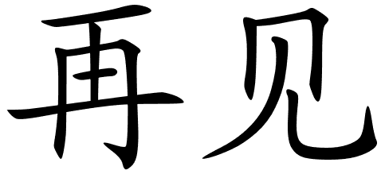

All the stuff you need to know . . .
Beijing, China's capital city, is a vibrant mix of history and modernity. Having served as the capital of the country for more than 800 years, it is home to some of the finest remnants of China's imperial past. Beijing is brightened by its glorious past, but is by no means struck in the past. Behind its rich and complex historical tapestries, everyday life unfolds with bewildering variety. From the commanding austerity of the Forbidden City to the hectic bar street at Sanlitun, Beijing is overflowing with a unique charm, beckoning visitors from around the world to lose themselves in the furious pace. Read more
Translation to Mandarin
北 京，中 国 的 首 都，是一个 充 满 活 力 的 历 史 和 现 代 性 的 组 合。
作 为 国 家 的 首 都 已 有 800 多 年 的 历 史，它 拥 有 中 国 帝 国 历 史 上 最 好 的一些 遗 迹。北 京 因 其 辉 煌 的 过 去 而 变 得 光 彩 夺 目，
但 在 过 去 没 有 什 么 意 义。在 其 丰 富 而 复 杂 的 历 史 挂 毯 背 后，日 常 生 活 展 现 着 迷 人 的 品 种。从 紫 禁 城 的 命 令 紧 缩 到 三里 屯 的 繁 忙 酒 吧 街，
北 京 充 满了 独 特 的 魅 力，来 自 世 界 各 地 的 游 客，以 惊 人 的 速 度 失 去 自 己。
| My Prefered Foreign Language | ||
|---|---|---|
| Mandarin Symbol | Mandarin | English Translation |
| < | Ni Hao | Hello |
| < | XieXie | Thank You |
| < | Zaijian | Bye |
The Clock Tower in the V&A Waterfront is a great historical landmark. The Clock Tower boasts an old tidal-gauge mechanism on the bottom floor, which was used to check tide levels. The second floor holds a decorative mirror room, which enabled the port captain a full view of all harbour activities. The clock mechanism can be found on the top floor and thanks to the restoration of this national monument in 1997, the original clock is still in use today. Read more
Translation to Mandarin
在 V＆A 海 滨 的 钟 楼 是一个 伟 大 的 历 史 地 标。钟 楼 在 底 层 有一
个 老 潮 汐 测 量 机 制，用 于 检 查 潮 汐 水 平。
二 楼 设 有一个 装 饰 镜 房，使 港 口 船 长 能 全 面 了 解 所 有 港 湾 活 动。
时 钟 机 制 可 以 在 顶 层 找 到，由 于 这 个 国 家 纪 念 碑 在 1997 年 的 恢 复，原 来 的 时 钟 仍 在 使 用 今 天
Artwork from practically each African country and culture is available. ATP’s roots started with the establishment of an art workshop in Zimbabwe in 1978. ATP has been housed in this location; the Old Port Captain’s Building at Cape Town’s Waterfront since 2001. Read more
Translation to Mandarin
几 乎 每 个 非 洲 国 家 和 文 化 的 艺 术 品 都 可 用。
ATP 的 根 源 始 于 1978 年 在 津 巴 布 韦 建 立一 个 艺 术 研 讨 会。
ATP 已 经 安 置 在 这 个 地 方;旧 港 口 船 长 的 大 厦 在 开 普 敦 的 江 边 自 2001 年 以 来。
The Alfred Basin was the first docks for what is today the Port of Cape Town. It was officially opened by and named after Prince Alfred the Duke of Edinburgh, in July 1870 after 10 years of construction work. The prince, Queen Vctoria's second son, laid the foundation stone in 1860. The basin is now part of the Victoria & Alfred Waterfront. Read more
Translation to Mandarin
阿 尔 弗 雷 德 盆 地 是 今 天 开 普 敦 港 的 第 一 个 码 头。
它 正 式 开 放 并 命 名 的 王 子 阿 尔 弗 雷 德 公 爵 爱 丁 堡，
在 1870 年7 月 经 过 10 年 的 建 设 工 作。王子，
王 后 Vctoria 的 第 二 个 儿 子，
在 1860 年 奠 定 了 基 础 石 头。
盆 地 现 在 是 维 多 利 亚 和 阿 尔 弗 雷 德 滨 水 区 的 一 部 分。